Corso di Ingegneria del Software
Anno Accademico 2025/2026
Docente: Prof. Enrico Vicario
Autore/i: [DA INSERIRE]
Matricola/e: [DA INSERIRE]
Versione 1.0 RC — 11 settembre 2026
Commit base: ed03c32289aa663dfc04b1bf0c8fda15da326b47
Fingerprint baseline verificata: e7fb29af…aeec25
DriveHub è un’applicazione desktop che coordina le attività essenziali di un concessionario: catalogo, test drive, noleggio, vendita al cliente, acquisizione di veicoli proposti dal cliente, inventario, ordini, prezzi, promozioni e indicatori direzionali. Il problema progettuale non è una semplice anagrafica: più attori operano sugli stessi veicoli e gli esiti economici devono restare coerenti anche in presenza di errori o richieste concorrenti.
L’obiettivo è offrire a Customer, Salesman e Manager percorsi distinti, proteggendo nel dominio e nel database le regole che non possono dipendere dal solo stato dei pulsanti. La baseline usa Java 21, JavaFX 21, Maven, JDBC e PostgreSQL 16. Il gateway di pagamento è intenzionalmente simulato e non tratta dati finanziari reali.
Il lavoro è stato condotto in quattro cicli verificabili:
La relazione descrive il prodotto effettivamente verificato. I soli campi segnaposto ammessi sono nomi e matricole degli autori; le decisioni di dominio non determinate dalle fonti sono indicate esplicitamente nel capitolo 13.
In caso di contrasto si è adottato l’ordine: materiale ufficiale del corso;
diagrammi originali DriveHub; implementazione e documentazione DriveHub;
ChargeNet come benchmark di struttura; best practice compatibili. I file
originali in Diagrammi/, il materiale didattico e ChargeNet-master/ sono
rimasti inalterati.
| Fonte | Contributo | Trattamento |
|---|---|---|
| note di project work e dispense UML/testing | forma della relazione, template UC, qualità dei diagrammi e categorie di test | regola metodologica |
Users SWE.drawio |
attori, obiettivi e include del pagamento | specifica da normalizzare |
| page-navigation e mockup | pagine e contenuti per ruolo | riferimento UI, non requisito esaustivo |
SWE ER.drawio |
concetti persistenti e domande aperte | ricostruzione con vincoli espliciti |
| package diagram originale | separazione presentation/business/domain/DAO | vincolo architetturale |
| ChargeNet | profondità documentale e organizzazione | nessuna regola del dominio copiata |
Il file originale chiamato Login UI.png rappresenta in realtà la
registrazione; Employee UI.png rappresenta il Manager. Queste incongruenze
sono risolte in base al contenuto, senza rinominare gli originali.
Sono inclusi autenticazione, catalogo, test drive, noleggi, riserva/acquisto, proposta di un veicolo al concessionario, pagamenti dimostrativi, inventario, ordini di stock, prezzi/promozioni e dashboard. Sono esclusi sedi multiple, fornitori, officina, garanzie, danni, assicurazione, finanziamenti, fatturazione, firma digitale, notifiche reali e pagamento/rimborso reale: le fonti non forniscono requisiti sufficienti per modellarli correttamente.
User è l’identità comune con un Role, non un quarto attore operativo.Vehicle è la risorsa condivisa. Il suo purpose distingue RENTAL,
FOR_SALE e ACQUISITION_REQUEST; lo stato ne rappresenta la disponibilità.
Rental e TestDrive modellano processi temporali, SaleOrder e Payment
quelli economici, PurchaseProposal l’acquisizione dal Customer e
StockOrder l’approvvigionamento.
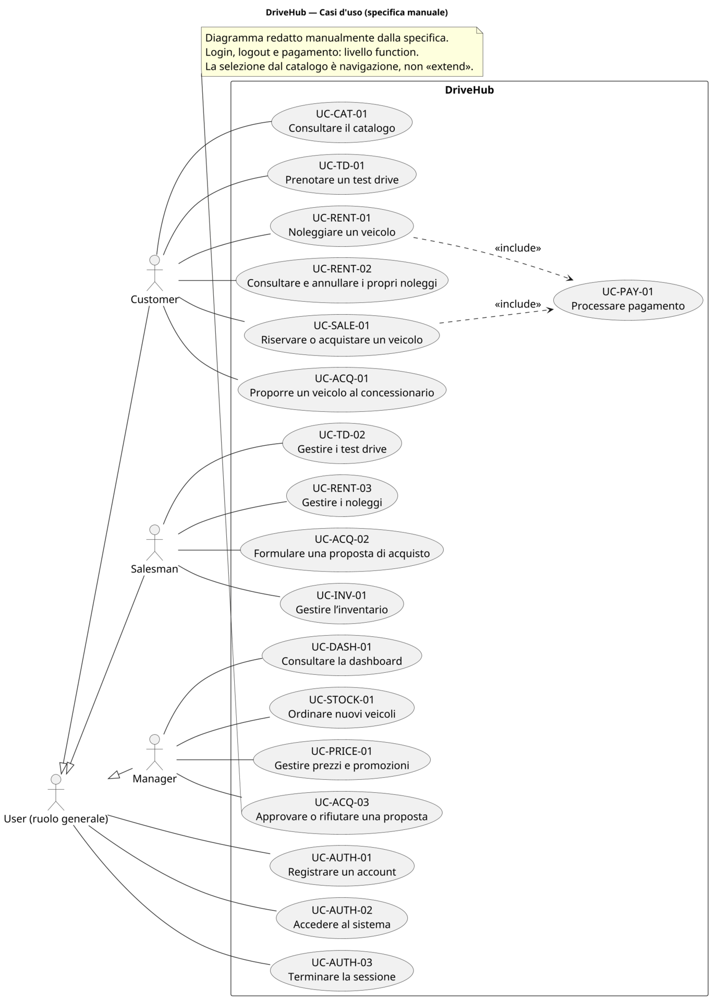
Figura 1 — Confine DriveHub, attori esterni e obiettivi utente. Il pagamento è un caso incluso, non un attore.
| Scelta | Motivazione nel progetto |
|---|---|
| Java 21 | target LTS tipizzato, coerente con il corso e verificato anche in container ufficiale |
| JavaFX 21 + FXML/CSS | desktop multipagina con separazione fra struttura della vista, stile e controller |
| Maven | build, dipendenze, profili, esecuzione test, JaCoCo e package riproducibili |
| JDBC + PostgreSQL 16 | controllo esplicito di transazioni, constraint, lock, CAS e query proprie del DB target |
| JUnit 5 + Mockito | test parametrizzati e isolati con porte/gateway controllabili; Mockito è caricato come javaagent |
| JaCoCo 0.8.14 | misura riproducibile della copertura senza trasformarla in prova di correttezza |
| Draw.io + PlantUML | originali visuali preservati e nuovi diagrammi progettuali versionabili, redatti manualmente |
| Docker Compose | database effimero e ripetibile, distinto dal volume applicativo locale |
| AI assistiva | audit e redazione con review su sorgenti, log, rendering e risultati; responsabilità agli autori |
| Area | ID e obbligo |
|---|---|
| Accesso | RF-AUTH-01 registrazione univoca; RF-AUTH-02 login e routing; RF-AUTH-03 logout |
| Customer | RF-CAT-01 catalogo; RF-TD-01 prenotazione test drive; RF-RENT-01/02 noleggio, consultazione e annullamento; RF-SALE-01 riserva/acquisto; RF-ACQ-01 proposta veicolo |
| Salesman | RF-TD-02 gestione test drive; RF-RENT-03 noleggi assegnati; RF-ACQ-02 offerta; RF-INV-01 inventario |
| Manager | RF-DASH-01 indicatori; RF-STOCK-01 ordini; RF-PRICE-01 prezzi/promozioni; RF-ACQ-03 decisione proposta |
| Trasversali | RF-PAY-01 pagamento dimostrativo; RF-ERR-01 messaggi comprensibili e non sensibili |
I requisiti non funzionali rendono verificabile la qualità: password protette e configurazione da ambiente (RNF-SEC-01), autorizzazione nel business (RNF-SEC-02), invarianti Java/SQL (RNF-DATA-01), atomicità (RNF-DATA-02), gestione della concorrenza (RNF-DATA-03), dipendenze a strati (RNF-QUAL-01), porte sostituibili (RNF-QUAL-02), esiti UI distinti (RNF-UX-01), ambiente Java 21/PostgreSQL 16 (RNF-PORT-01), dati fittizi (RNF-PRIV-01) e tracciabilità degli ID (RNF-DOC-01).
| Gruppo | Regole principali e conseguenza |
|---|---|
| Identità | email, CF, targa e codice modello unici; ruoli limitati a Customer/Salesman/Manager |
| Catalogo | ogni Vehicle ha un modello e un purpose; prezzo o tariffa sono coerenti col purpose; valori non negativi |
| Tempo | start < end; overlap incompatibili rifiutati; intervalli adiacenti ammessi |
| Ownership | il Customer vede/modifica i propri oggetti; il Salesman modifica ciò che ha preso in carico |
| Pagamento | riferimento XOR Rental/SaleOrder; purpose compatibile; importo positivo ed esattamente dovuto; singolo esito terminale |
| Promozione | massimo un record sostituibile per veicolo; percentuale in (0,100); nessun cumulo |
| Decisione | solo una proposta OFFERED è decidibile; Manager e istante sono registrati insieme |
| Concorrenza | vendita, saldo, slot, claim e decisione devono avere un solo vincitore quando competono |
La doppia protezione dominio/database è intenzionale: il dominio fornisce errori significativi, mentre i constraint impediscono che altri percorsi JDBC creino stati impossibili.
Sono definiti diciotto template completi. Di seguito sono sviluppati i quattro workflow più rischiosi; per ciascuno le alternative indicano il passo di origine. Gli altri casi sono riassunti nella tabella finale e sono tracciati fino ai test.
| Campo | Specifica |
|---|---|
| Livello | user goal |
| Attore primario | Customer |
| Supporto | gateway di pagamento simulato |
| Trigger | il Customer seleziona un veicolo RENTAL |
| Precondizioni | sessione Customer attiva; veicolo esistente e disponibile |
| Garanzia minima | nessun noleggio è presentato come pagato senza Payment COMPLETED |
| Garanzia di successo | Rental REQUESTED e Payment COMPLETED sono commit-tati insieme |
| Pagine | P-10 Catalogo, P-12 Noleggia, P-40 Pagamento, P-13 Prenotazioni |
Flusso base:
CheckoutService crea Rental e Payment nella stessa UnitOfWork.COMPLETED.REQUESTED; P-13 mostra la pratica.Alternative: 3a date mancanti/invertite, nessuna scrittura; 4a overlap,
conflitto correggibile; 6a dialog annullato, nessun comando business; 7a
preventivo cambiato, gateway non invocato; 8a rifiuto previsto, Payment
FAILED e Rental CANCELLED sono commit-tati insieme; 8b eccezione inattesa,
rollback di tutte le scritture.
Evidenze: CheckoutFunctionalTest#ftRent01AcceptedCheckout,
#ftRent02Periods, #ftRent03DeclinedCheckout, smoke reali del dialog e test
PostgreSQL di rollback/concorrenza.
| Campo | Specifica |
|---|---|
| Livello | user goal |
| Attore primario | Customer |
| Precondizioni | veicolo FOR_SALE disponibile; sessione Customer |
| Garanzia minima | nessuna doppia vendita o eccedenza sul residuo |
| Successo riserva | ordine DEPOSIT_PAID, veicolo RESERVED, Payment SALE_DEPOSIT |
| Successo acquisto | ordine PAID, veicolo RESERVED, Payment SALE_BALANCE |
| Pagine | P-10 e P-40 |
Flusso base:
RESERVED e Payment nella stessa transazione.DEPOSIT_PAID; un pagamento integrale esatto a
PAID. Il veicolo non è più acquistabile da altri.Alternative: 3a annullamento senza mutazioni; 4a preventivo scaduto o veicolo
già impegnato, nessun addebito; 5a acconto/saldo non esatto, rifiuto; 6a decline,
ordine CANCELLED e veicolo rilasciato atomicamente; 6b errore inatteso,
rollback; 7a saldo già coperto, secondo pagamento rifiutato.
Evidenze: CheckoutFunctionalTest#ftSale01DepositBalanceDelivery,
#ftSale03DeclinedDeposit, #ftSale03FullPurchaseOnce, smoke vendita e
PostgresConcurrencyTest#doubleSale/#doubleBalance.
| Campo | Specifica |
|---|---|
| Livello | user goal |
| Attore primario | Manager |
| Precondizioni | sessione Manager; proposta OFFERED |
| Garanzia minima | una decisione concorrente non sovrascrive la prima |
| Successo | stato terminale, Manager, motivazione e decided_at persistiti insieme |
| Pagina | P-33 Approvazioni |
Flusso base: (1) il sistema mostra le offerte in attesa; (2) il Manager ne
seleziona una; (3) sceglie “Approva”; (4) il servizio verifica ruolo e stato;
(5) un update compare-and-set da OFFERED registra APPROVED, revisore e
istante; (6) la coda viene aggiornata. Alternative: 1a coda vuota; 2a nessuna
selezione; 3a “Rifiuta” conduce a REJECTED; 4a un’altra sessione ha già
deciso, zero righe aggiornate e conflitto senza overwrite.
Evidenze: UserGoalsFunctionalTest#ftAcq03OfferAndBothDecisions,
PurchaseProposalServiceTest#managerDecisionIsAtomic, test PostgreSQL di
round-trip dell’istante e race CAS.
| Campo | Specifica |
|---|---|
| Livello | subfunction inclusa da UC-RENT-01 e UC-SALE-01 |
| Attore primario | Customer |
| Supporto | PaymentGateway simulato |
| Precondizioni | riferimento e importo autorevole prodotti dal servizio |
| Garanzia minima | annullamento non scrive; failure non promuove l’operazione |
| Successo | Payment COMPLETED e stato dell’aggregato coerente nello stesso commit |
| Pagina | P-40 PaymentDialog.fxml |
Flusso base: (1) il dialog mostra importo e riferimento non sensibile; (2) il
Customer sceglie un metodo simulato; (3) conferma; (4) il servizio blocca il
riferimento, verifica ownership e residuo e salva Payment PENDING; (5) il
gateway approva; (6) Payment diventa COMPLETED e l’aggregato viene aggiornato.
Alternative: 2a nessun metodo; 3a annullamento; 4a non proprietario, stato non
ammesso, importo errato o residuo zero; 5a rifiuto con Payment FAILED; 5b
eccezione inattesa con rollback. Il gateway locale è privo di effetti esterni:
con un provider reale servirebbero idempotenza e riconciliazione.
| Attore | UC | Pagine | Evidenza principale |
|---|---|---|---|
| User | UC-AUTH-01/02/03 | P-02/P-01/workspace/P-00 | auth funzionale, sessione e routing JavaFX |
| Customer | UC-CAT-01, UC-TD-01, UC-RENT-02, UC-ACQ-01 | P-10/P-11/P-13/P-14 | filtri, overlap, ownership e rollback proposta |
| Salesman | UC-TD-02, UC-RENT-03, UC-ACQ-02, UC-INV-01 | P-20…P-23 | lifecycle, claim CAS, offerta e Observer after-commit |
| Manager | UC-DASH-01, UC-STOCK-01, UC-PRICE-01 | P-30…P-32 | aggregati noti, ordine atomico, pricing/promozione |
La matrice di progetto collega ogni riga a controller, servizio, dominio, porta
DAO, tabella e metodo JUnit. Tutte le righe risultano V nella baseline; le
policy A-05/A-08 restano da validare come decisioni, non come difetti tecnici.
La presentazione è composta da viste FXML e controller sottili. Welcome porta a Login o Register; autenticazione e registrazione instradano al workspace del ruolo; logout cancella la sessione e rende inaccessibili le route protette. I workspace concentrano le attività correlate in tab, preservando la selezione e mostrando messaggi locali quando l’input è correggibile.
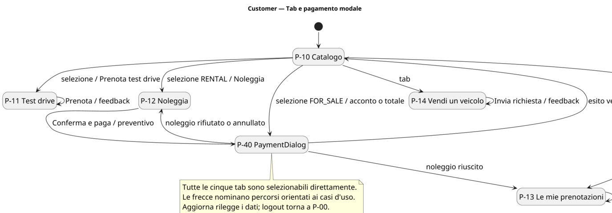
Figura 2 — Percorso Customer: il dialog P-40 distingue conferma, rifiuto e annullamento.
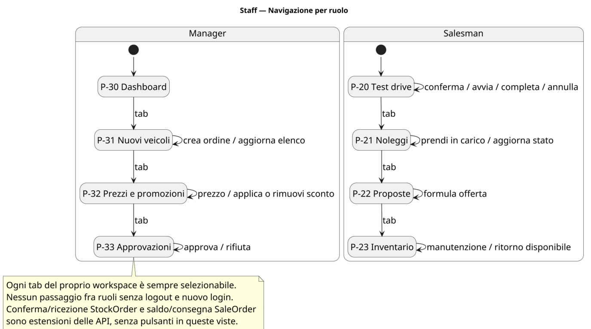
Figura 3 — Workspace Salesman e Manager e ritorno comune alla welcome page.
CustomerWorkspaceController ottiene il preventivo dal gateway UI e apre
realmente PaymentDialog.fxml sia per il noleggio sia per la vendita. Il
ChoiceDialog residuo sceglie soltanto fra acconto e acquisto integrale: non
sostituisce il dialog di pagamento. Durante un dialog il comando è protetto da
re-entrancy; la chiusura non può diventare un successo implicito.
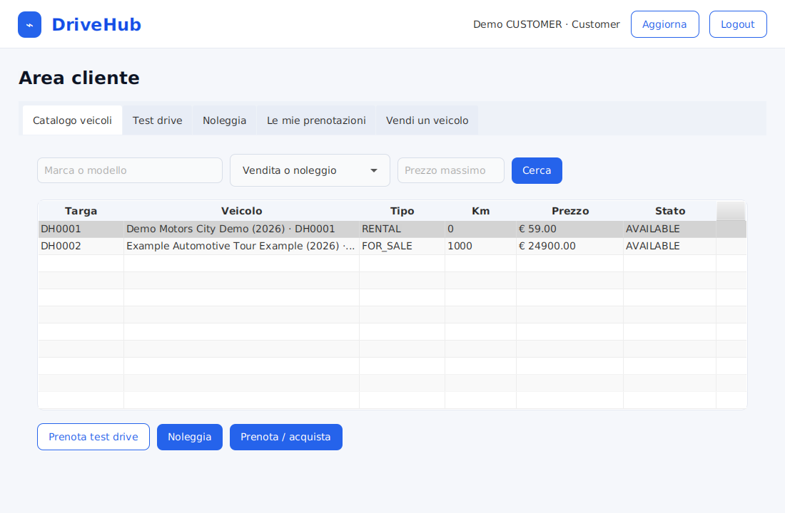
Figura 4 — Catalogo Customer caricato dal composition root reale su PostgreSQL.
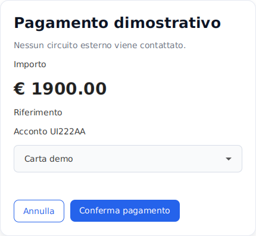
Figura 5 — P-40 mostra solo importo, riferimento e metodo simulato: nessun dato di carta.
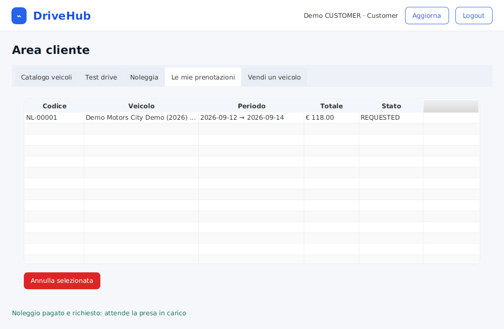
Figura 6 — Feedback dopo checkout JavaFX→business→PostgreSQL; il Payment è verificato anche dal DAO.
Gli screenshot sono stati acquisiti da stage JavaFX reali sotto Xvfb, non sono mockup ridisegnati. Rimane utile una prova umana su desktop fisico per focus, tastiera, accessibilità e ridimensionamento.
La regola principale è presentation → business → domain, con il business che
dipende dalle porte dao.interfaces e gli adapter PostgreSQL che le
implementano. Il dominio non conosce JavaFX, JDBC o PostgreSQL; la presentazione
non può accedere direttamente alla persistenza. DriveHubApplication è il
composition root: costruisce data source, factory, servizi, gateway e
navigazione.
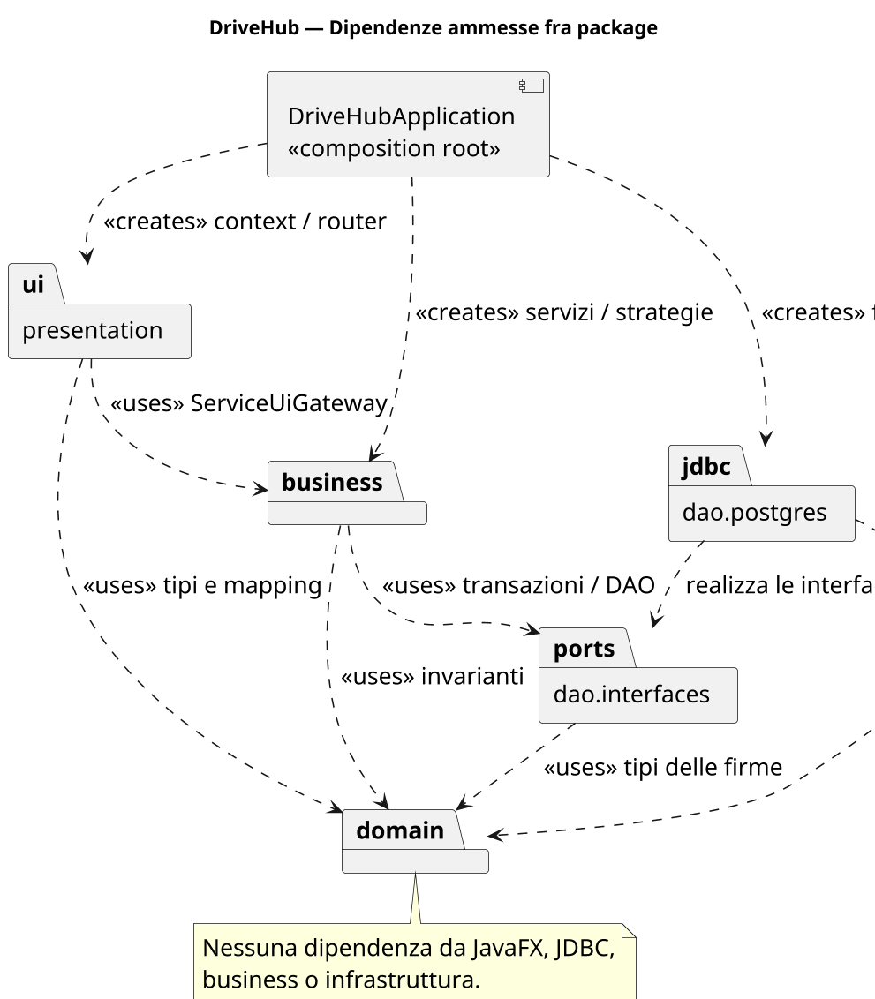
Figura 7 — Dipendenze ammesse. Le frecce verso le porte consentono di sostituire PostgreSQL nei test.
| Package | Responsabilità | Dipendenze vietate |
|---|---|---|
domain.users/vehicles/rentals/sales/observer |
identità, invarianti, stati ed eventi | JavaFX, JDBC, servizi |
business.services |
autorizzazione, casi d’uso, transazioni e policy | widget e SQL letterale |
dao.interfaces |
porte, DaoFactory, UnitOfWork |
adapter e presentazione |
dao.postgres |
JDBC, mapping, query, migration | decisioni UI/business |
presentation.controller/navigation/core |
binding, route, messaggi e proiezioni | DAO e regole persistenti |
Sei test strutturali ispezionano le dipendenze compilate: dominio isolato,
business limitato a dominio/porte, porte indipendenti dagli adapter, adapter
senza business/presentation, UI senza bypass della persistenza e controller
limitati a UiGateway/proiezioni.
AuthService, CatalogService, RentalService, TestDriveService,
SalesService, PurchaseProposalService, InventoryService,
PricingService, DashboardService e PaymentService espongono operazioni
orientate agli use case. CheckoutService coordina i flussi economici che
attraversano più aggregati; UiModelMapper converte i risultati per la UI senza
decidere prezzi o transazioni.
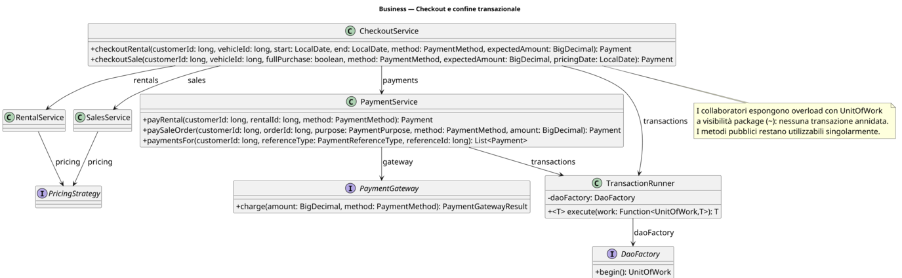
Figura 8 — Service layer e dipendenze verso factory, gateway e clock.
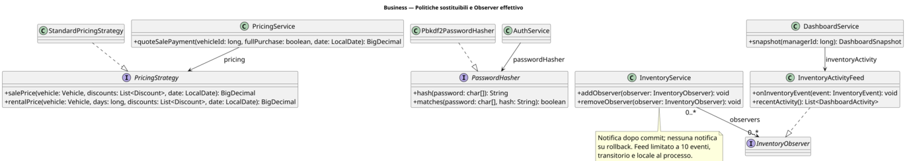
Figura 9 — Policy sostituibili: pricing, pagamento, transazioni ed eventi di inventario.
Brand e VehicleModel descrivono il catalogo; Vehicle ne rappresenta
l’istanza fisica. Il purpose determina quale prezzo sia obbligatorio. La targa
normalizzata è unica. User.requireRole rende esplicita l’autorizzazione di
base, mentre ownership e stato sono controllati dai servizi che conoscono il
caso d’uso.
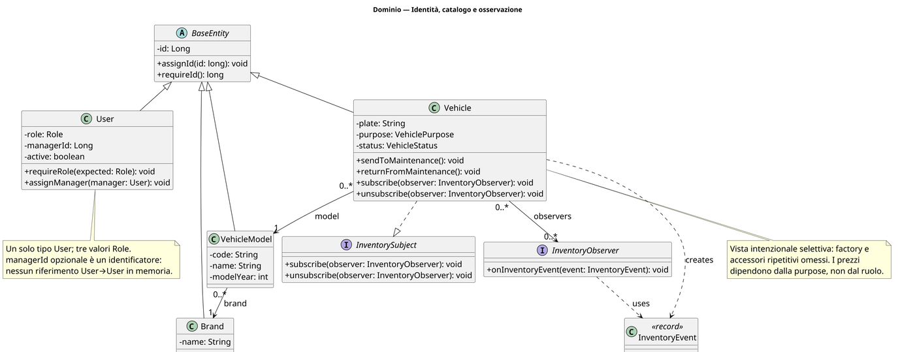
Figura 10 — Identità, catalogo e relazioni stabili; i riferimenti persistiti non sono composizioni arbitrarie.
| Aggregato | Percorso normale | Uscite alternative |
|---|---|---|
| TestDrive | REQUESTED→CONFIRMED→IN_PROGRESS→COMPLETED |
CANCELLED negli stati ammessi |
| Rental | REQUESTED→ASSIGNED→CONFIRMED→ACTIVE→COMPLETED |
CANCELLED prima degli stati terminali secondo ownership/pagamento |
| SaleOrder | RESERVED→DEPOSIT_PAID oppure RESERVED→PAID→COMPLETED |
CANCELLED su failure compatibile |
| Payment | PENDING→COMPLETED oppure PENDING→FAILED |
nessuna seconda transizione terminale |
| PurchaseProposal | REQUESTED→OFFERED→APPROVED/REJECTED |
decisione singola |
| StockOrder | PLACED→CONFIRMED→RECEIVED |
cancellazione prima della ricezione se ammessa |
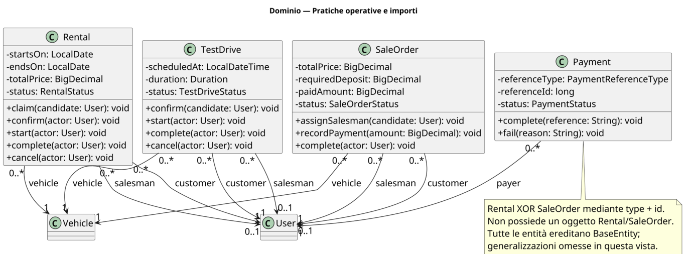
Figura 11 — Aggregati temporali: attori, intervalli e transizioni protette.
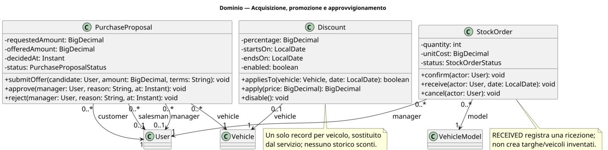
Figura 12 — Vendita, pagamento, proposta e stock order con stati terminali espliciti.
La logica di stato è nell’aggregato, non nel controller. Il DAO offre inoltre update condizionali quando la decisione deve essere atomica rispetto ad altre sessioni. Questo doppio livello evita sia transizioni illegali nel singolo oggetto, sia il classico “check-then-act” concorrente.
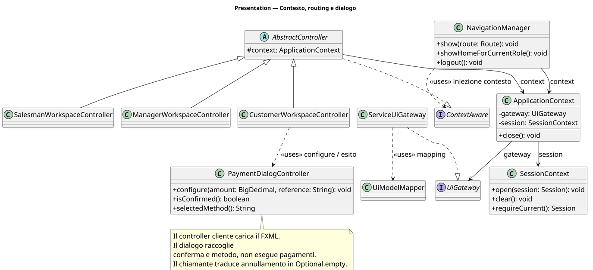
Figura 13 — Controller, navigazione, sessione e gateway UI. I controller non vedono le porte DAO.
Cinque migration versionate creano e affinano lo schema. Il bootstrap registra
ogni versione in drivehub_schema_migrations, è idempotente e può caricare un
seed dimostrativo privo di dati reali. La prova finale ha avviato uno schema
vuoto su PostgreSQL 16.15 e ha contato 22 foreign key e gli indici previsti.
| Tabella | Identità e riferimenti | Vincoli significativi |
|---|---|---|
users |
CF/email, ruolo, manager_id? |
univocità; ruolo ammesso; supervisore opzionale coerente |
brands, vehicle_models, vehicles |
Brand 1:N Model 1:N Vehicle | nome/codice/targa unici; purpose/prezzo/stato coerenti |
discounts |
un veicolo | un record sostituibile; 0 < percentage < 100; periodo valido |
rentals, test_drives |
Customer, Salesman?, Vehicle | intervallo valido, stato/assegnazione, protezione overlap |
sale_orders |
Customer, Salesman?, Vehicle | deposito, pagato e totale coerenti |
payments |
payer e Rental XOR SaleOrder | riferimento esclusivo; purpose/metodo/stato/importo coerenti |
purchase_proposals |
Customer, Vehicle, Salesman?, Manager? | dati di offerta/decisione coerenti con lo stato; decided_at |
stock_orders |
Manager e VehicleModel | quantità/costo positivi; date e stato coerenti |
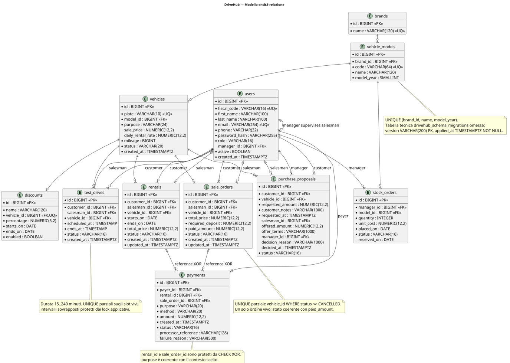
Figura 14 — ER canonico derivato dalle chiavi effettive e dai vincoli delle cinque migration.
Ogni aggregato ha una porta nel package dao.interfaces; gli adapter JDBC
incapsulano SQL e ricostruzione. JdbcEntityLoader centralizza caricamenti
correlati evitando che ogni DAO replichi il mapping. UnitOfWork espone porte
legate alla stessa connessione e possiede commit, rollback e close.
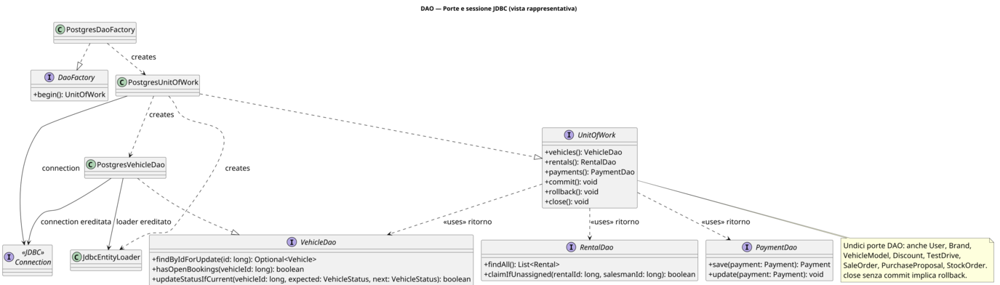
Figura 15 — Porte di persistenza, factory e adapter PostgreSQL coordinati dalla stessa UnitOfWork.
Le query critiche non sono semplici CRUD: ricerca catalogo, ownership, slot half-open, overlap di periodi, righe “for update”, code non assegnate e update compare-and-set. PostgreSQL aggiunge indici unici parziali per impedire doppie operazioni attive senza vietare il riuso di record cancellati.
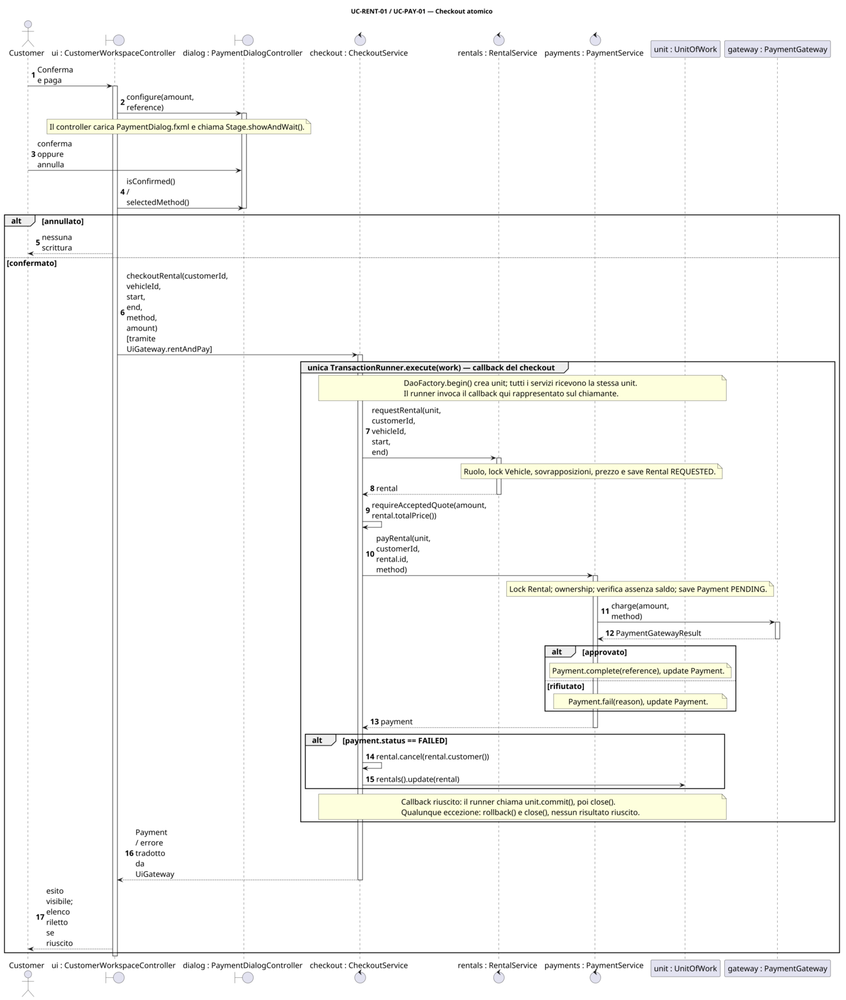
Figura 16 — Il confine di `TransactionRunner.execute` comprende Rental, Payment ed esito; quote scaduto e rollback sono espliciti.
Il decline è un esito previsto e viene conservato come audit FAILED insieme a
Rental CANCELLED. Un’eccezione inattesa, invece, propaga e fa rollback. La
distinzione è importante: “pagamento rifiutato” è informazione di dominio,
mentre una persistenza parziale è un difetto tecnico.
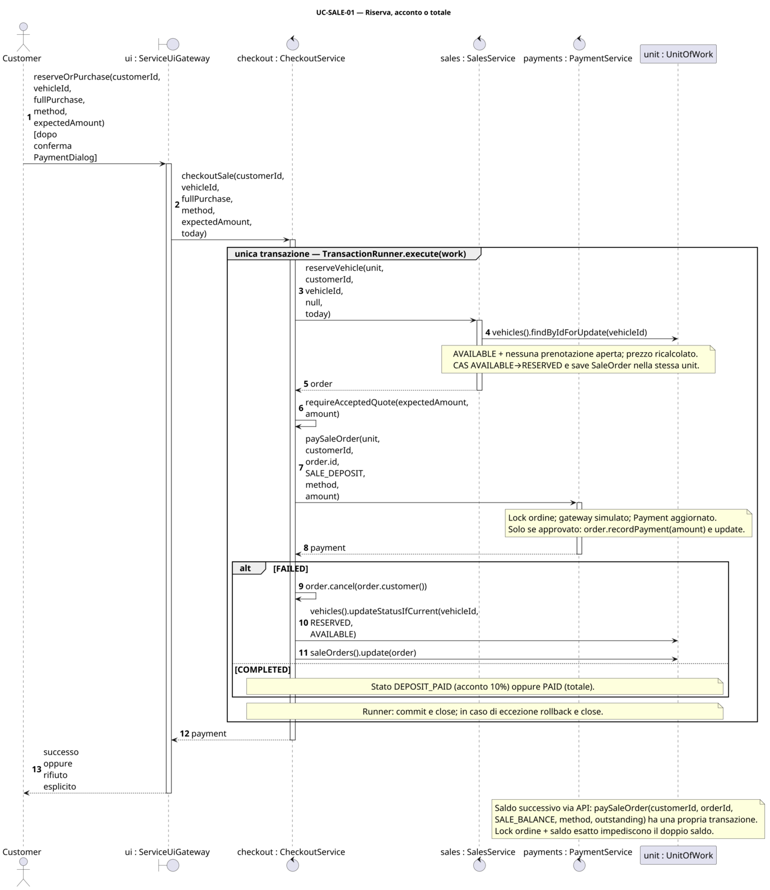
Figura 17 — Lock del veicolo, scelta del purpose e aggiornamento dell'ordine impediscono doppia vendita e sovrapagamento.
L’acconto usa SALE_DEPOSIT e deve coprire esattamente il deposito residuo;
l’acquisto integrale e il saldo usano SALE_BALANCE e devono coprire
esattamente il residuo totale. Una richiesta concorrente trova il veicolo non
più disponibile oppure perde l’update atomico.
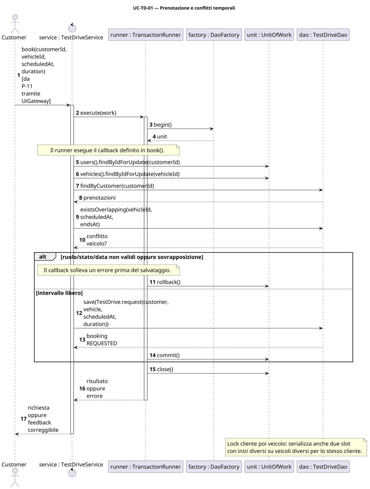
Figura 18 — Prenotazione, claim esclusivo e lifecycle del test drive.
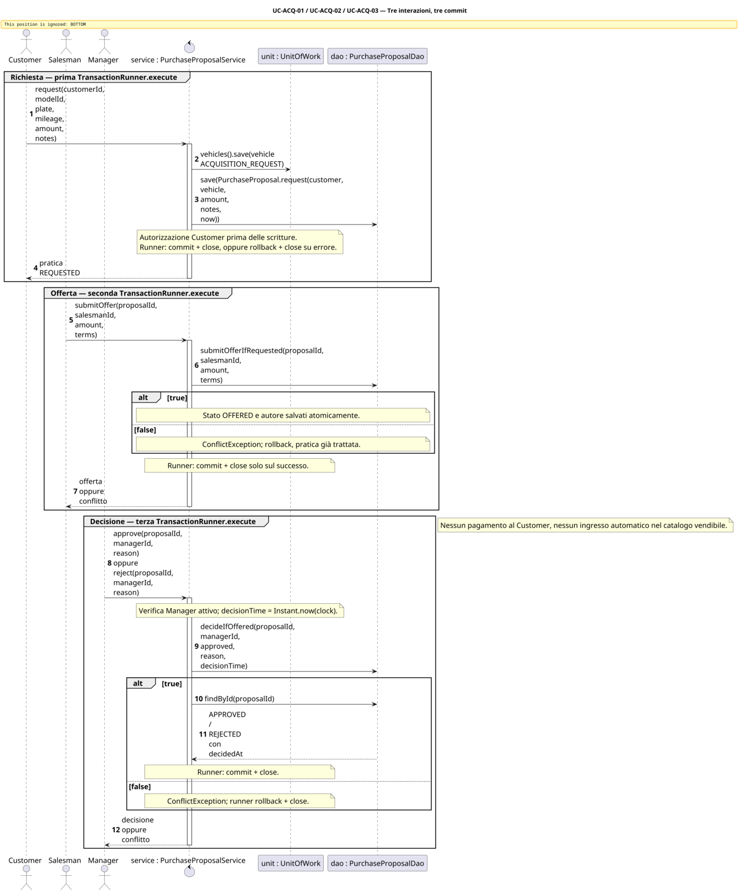
Figura 19 — Customer, Salesman e Manager cooperano; la decisione terminale usa CAS e registra l'istante.
I diagrammi di sequenza sono modelli progettuali scritti manualmente e confrontati con le firme reali; non sono reverse engineering dal codice.
TransactionRunner rende unico il protocollo: apre, esegue, commit-ta e, su
RuntimeException o Error, prova il rollback senza nascondere la causa
originale. Il try-with-resources garantisce la chiusura.
public <T> T execute(Function<UnitOfWork, T> work) {
try (UnitOfWork unit = daoFactory.begin()) {
try {
T result = work.apply(unit);
unit.commit();
return result;
} catch (RuntimeException | Error failure) {
try { unit.rollback(); }
catch (RuntimeException rollbackFailure) {
failure.addSuppressed(rollbackFailure);
}
throw failure;
}
}
}
Problema risolto: evitare commit/rollback duplicati nei servizi e preservare
l’errore diagnostico. Partecipanti: servizio, TransactionRunner,
DaoFactory, UnitOfWork. Il test UT-TX-01 controlla anche il raro caso in
cui il commit fallisce e il rollback produce un secondo errore.
Il controller non crea prima la pratica e poi paga in una transazione diversa.
CheckoutService racchiude l’intero caso d’uso e rifiuta un preventivo obsoleto
prima di chiamare il gateway.
return transactions.execute(unit -> {
Rental rental = rentals.request(unit, customerId, vehicleId,
startDate, endDate);
requireAcceptedQuote(expectedAmount, rental.totalPrice());
Payment payment = payments.payRental(unit, customerId,
rental.requireId(), method);
if (payment.status() == PaymentStatus.FAILED) {
rental.cancel(rental.customer());
unit.rentals().update(rental);
}
return payment;
});
Per la vendita lo stesso coordinatore sceglie esplicitamente il purpose:
PaymentPurpose purpose = fullPurchase
? PaymentPurpose.SALE_BALANCE
: PaymentPurpose.SALE_DEPOSIT;
Payment payment = payments.paySaleOrder(unit, customerId,
order.requireId(), purpose, method, amount);
Questo è Service Layer applicato a un obiettivo utente, non una mera collezione di metodi CRUD. Il vantaggio è osservabile nei test di decline, quote scaduto, errore gateway e doppia vendita.
PaymentService carica l’ordine con lock, verifica proprietario, stato e
residuo e accetta solo l’importo esatto richiesto:
SaleOrder order = unit.saleOrders().findByIdForUpdate(orderId)
.orElseThrow(() -> new EntityNotFoundException("sale order", orderId));
requireOwner(customer, order.customer());
validateSalePayment(order, purpose, amount);
// ... salva PENDING, invoca il gateway, salva l'esito ...
if (payment.status() == PaymentStatus.COMPLETED) {
order.recordPayment(amount);
unit.saleOrders().update(order);
}
L’acconto in eccesso non viene reinterpretato come saldo; il saldo parziale non è accettato; un ordine già coperto non produce un secondo Payment. Questa scelta riduce ambiguità e rende l’oracolo ripetibile.
Vehicle emette un InventoryEvent, ma InventoryService lo raccoglie durante
la transazione e lo pubblica agli observer esterni solo dopo il commit:
Vehicle changed = transactions.execute(unit -> {
Vehicle vehicle = unit.vehicles().findByIdForUpdate(vehicleId).orElseThrow();
InventoryObserver collector = committedEvents::add;
vehicle.subscribe(collector);
try { vehicle.sendToMaintenance(); }
finally { vehicle.unsubscribe(collector); }
unit.vehicles().update(vehicle);
return vehicle;
});
committedEvents.forEach(this::notifyObservers);
Problema: una notifica pre-commit potrebbe mostrare in dashboard uno stato poi
annullato. Partecipanti: Vehicle subject, InventoryObserver,
InventoryService e InventoryActivityFeed. La collaborazione after-commit è
provata da test di commit, rollback e unsubscribe. Un errore di un observer
secondario è loggato dopo il commit e non rende fittizio un rollback.
StandardPricingStrategy sceglie lo sconto applicabile più
alto e non cumula candidati. PricingService la usa e mantiene un record
sostituibile; il vantaggio è poter variare la policy senza modificare gli
aggregati o i controller.PaymentGateway separa il workflow dal processore simulato. Non
raccoglie carta o credenziali. Un gateway reale richiederebbe chiavi di
idempotenza, outbox/riconciliazione e gestione di esiti asincroni.DriveHubApplication è l’unico punto che collega
configurazione, PostgreSQL, servizi, gateway UI, sessione e navigazione; ciò
evita service locator nascosti nei controller.UiModelMapper converte dominio in record di presentazione. È una
responsabilità di adattamento, non viene presentato come pattern GoF.I pattern sono inclusi perché risolvono problemi effettivi e hanno test osservabili; non si attribuiscono nomi decorativi a semplici classi.
pom.xml fissa release 21, JavaFX 21, JUnit 5, Mockito 5.20 con javaagent e
JaCoCo 0.8.14. Le credenziali DB provengono dalle variabili documentate in
.env.example; .env non è versionato. compose.yaml avvia PostgreSQL 16. La
procedura locale è:
docker compose up -d
mvn javafx:run
Lo script scripts/test_full_stack.sh usa invece credenziali casuali effimere,
una rete isolata e rimuove le risorse al termine.
La suite combina prospettive diverse:
| Livello | Tecnica | Esempi di oracolo |
|---|---|---|
| dominio/servizi | white-box unit | ramo, eccezione, transizione, chiamata/assenza di chiamata |
| funzionale | black-box via API business | obiettivo attore, stato finale e scritture visibili |
| DAO/schema | gray-box integration | round-trip, SQLSTATE, query, lock, CAS, rollback |
| architettura/FXML | strutturale/contratto | dipendenze vietate, handler e risorse |
| JavaFX | smoke end-to-end | stage, route, dialog, feedback, doppio click, persistenza reale |
Un test funzionale esprime l’oracolo in termini di esito utente e stato persistito, senza dipendere dai dettagli JDBC:
Payment payment = checkout.checkoutRental(customer.requireId(),
rentalVehicle.requireId(), DAY, DAY.plusDays(3),
PaymentMethod.CARD, RENT_TOTAL);
assertEquals(PaymentStatus.COMPLETED, payment.status());
assertEquals(RentalStatus.REQUESTED,
rental(payment.referenceId()).status());
assertEquals(RENT_TOTAL, payment.amount());
Un integration test concorrente usa invece due richieste reali e un oracolo gray-box sul numero delle righe:
oneWinner(
() -> checkout.checkoutSale(customer.requireId(), sale.requireId(),
true, PaymentMethod.CARD, price, DAY),
() -> checkout.checkoutSale(other.requireId(), sale.requireId(),
true, PaymentMethod.CARD, price, DAY));
assertEquals(1, charges.get());
assertEquals(1, count("sale_orders"));
assertEquals(1, count("payments"));
H2 in modalità PostgreSQL accelera la suite standard ma non è contato come prova del DB target. Il profilo PostgreSQL avvia il server reale e verifica constraint, mapping e concorrenza con connessioni indipendenti.
| Ambiente/comando | Test | Failure / error / skipped | Esito |
|---|---|---|---|
host OpenJDK 25.0.4.1, target bytecode 21, mvn clean test |
81 | 0 / 0 / 0 | BUILD SUCCESS |
| Temurin 21.0.9, suite standard | 81 | 0 / 0 / 0 | BUILD SUCCESS |
| Temurin 21 + PostgreSQL 16.15 | 101 | 0 / 0 / 0 | BUILD SUCCESS |
| Temurin 21 + Xvfb/GTK, 7 smoke JavaFX | 88 | 0 / 0 / 0 | BUILD SUCCESS |
| full stack Temurin 21 + PostgreSQL 16.15 + 8 smoke JavaFX | 109 | 0 / 0 / 0 | BUILD SUCCESS, 29,062 s Maven |
Il test JavaFX aggiuntivo del profilo full-stack attraversa il composition root,
effettua login dei tre ruoli, carica il catalogo dal DB, conferma un noleggio e
ricontrolla tramite DAO un Rental e un Payment COMPLETED dello stesso importo.
Le prove PostgreSQL hanno verificato cinque migration da schema vuoto, seed idempotente, 22 foreign key, undici enum Java contro i CHECK effettivi, UNIQUE/CHECK/XOR, query di overlap, indici unici parziali, rollback e otto scenari concorrenti. Nei casi di vendita, saldo, pagamento noleggio, booking, claim e decisione viene verificato esattamente il numero di vincitori.
| Metrica JaCoCo full-stack | Coperti / totale | Percentuale |
|---|---|---|
| istruzioni | 12.604 / 16.083 | 78,37% |
| branch | 687 / 1.095 | 62,74% |
| linee | 2.532 / 3.135 | 80,77% |
| complessità | 1.019 / 1.579 | 64,53% |
| metodi | 825 / 1.025 | 80,49% |
| classi | 94 / 100 | 94,00% |
Non è stata inventata una soglia richiesta dal corso. La coverage non misura la correttezza dell’oracolo né l’assenza di difetti; è stata privilegiata la copertura di invarianti, alternative, autorizzazioni, transazioni e race condition invece di getter e codice dichiarativo.
docs/evidence/full-stack/ contiene log Maven sanitizzato, venti XML Surefire,
jacoco.xml, riepilogo versioni/contatori e manifest dei sorgenti. Il commit
base è ed03c32; poiché la consegna contiene modifiche non ancora committate,
il manifest SHA-256 completo
e7fb29af5332d2abf13939c12de0462b99c58573cc722cfceb78dba911aeec25
identifica la baseline eseguita. Qualunque variazione a sorgenti, SQL, FXML,
POM o Compose richiede una nuova esecuzione.
Comandi:
mvn clean test
bash scripts/test_postgres.sh
bash scripts/test_full_stack.sh
PLANTUML_JAR=/percorso/plantuml.jar bash scripts/render_diagrams.sh
python3 scripts/build_report.py
Un assistente AI è stato usato per inventario e confronto delle fonti, individuazione delle incoerenze, supporto a requisiti/design, revisione di codice e test, redazione dei PlantUML manuali e composizione della relazione. Gli originali sono rimasti in sola lettura e ChargeNet è stato usato come benchmark, non come sorgente di regole o codice del dominio.
Il supporto generativo non costituisce validazione accademica. Per ridurre il rischio di API, cardinalità o risultati inventati, i nomi sono stati confrontati con i sorgenti, enum e constraint con PostgreSQL, risultati con XML/log e diagrammi con rendering e review visiva. Agli autori restano comprensione, originalità, responsabilità della consegna e capacità di motivare ogni scelta.
Registro sintetico:
| Periodo | Strumento | Attività | Controllo |
|---|---|---|---|
| 23 agosto 2026 | Codex/OpenAI, GPT-5 | analisi iniziale e documentazione | baseline riesaminata; nessuna approvazione attribuita all’AI |
| 7–11 settembre 2026 | Codex/OpenAI, agente di coding | audit, correzioni, test, UML, tracciabilità e report | 109 test, PostgreSQL reale, JavaFX, rendering UML, evidenze versionate |
| ID | Assunzione | Conseguenza/reversibilità |
|---|---|---|
| A-05 | scelta pubblica del ruolo ammessa solo nel prototipo | in produzione serve provisioning amministrativo |
| A-07 | un record sconto sostituibile; Strategy pronta a più candidati | rimuovere la unique abilita storico senza cambiare la policy |
| A-08 | un noleggio operativo è modificato dal Salesman assegnatario | algoritmo di assegnazione sostituibile, policy da confermare |
| A-09 | giorni civili con estremo finale esclusivo | convenzione da mostrare chiaramente in UI |
| A-10 | SaleOrder rappresenta riserva/acquisto con deposito e saldo | rimborso/scadenza richiedono nuove regole |
| A-13 | gateway simulato locale, senza side effect esterni | un provider reale richiede idempotenza e riconciliazione |
Prima di trasformare il prototipo in prodotto servono indicazioni su:
Queste decisioni non bloccano la coerenza tecnica della baseline perché le funzioni non specificate sono fuori scope o isolate dietro policy/porte.
DriveHub realizza i tre percorsi di ruolo con una separazione verificata fra UI, servizi, dominio e persistenza. I rischi principali — pagamento atomico, preventivo obsoleto, doppia vendita, doppio saldo, overlap e decisione concorrente — sono resi espliciti nel design e possiedono test con oracolo sullo stato persistito. La documentazione usa gli stessi ID di requisiti, use case, pagine e test; diagrammi e screenshot fanno parte del prodotto verificato.
Checklist per la presentazione:
CheckoutService/UnitOfWork e la differenza fra decline
previsto ed eccezione inattesa;Il criterio tecnico di uscita è soddisfatto dalla prova full-stack da 109 test, 0 failure, 0 error e 0 skipped. La consegna resta “release candidate” finché gli autori non compilano i dati personali ed eseguono la checklist manuale sul desktop usato per la discussione.